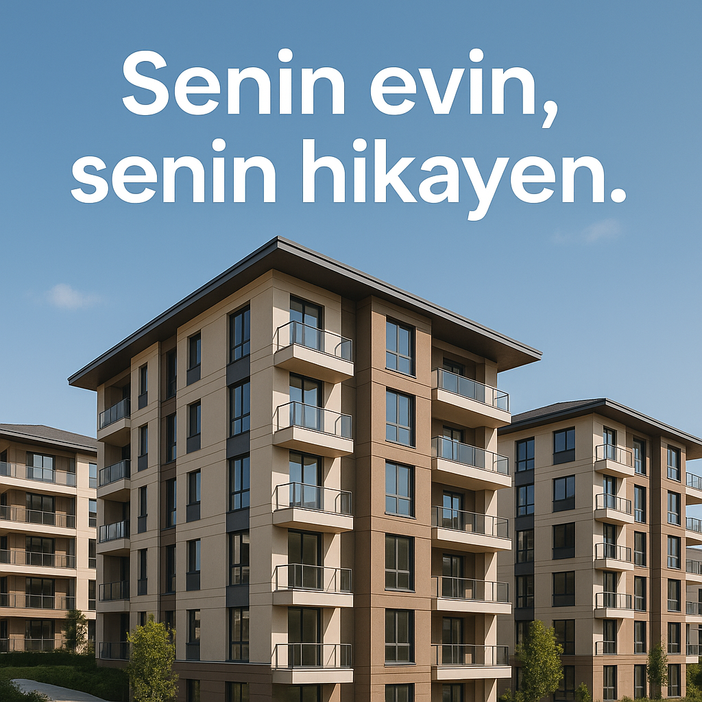

Çalışanlarımıza Özel Konut Sahipliği Programı Başladı!
Yazan: Furkan Karaca • 24 Nisan 2025
Değerli ShiftDelete.Net Ailesi, Her gün birlikte attığımız adımlarla sadece teknolojiye değil, hayata da değer katıyoruz. Ar-Ge’den yazılıma, üretimden yönetime uzanan bu eşsiz yolculukta, ortak emeğimizin gerçek birer sonucu olan projelere imza atıyoruz. Ve şimdi bu adımların bir yenisini, belki de en anlamlısını sizlerle paylaşmaktan büyük mutluluk ve gurur duyuyoruz: ShiftDelete.Net Çalışanlarına Özel Konut Sahipliği Destek Programı artık başlıyor! Bu girişim yalnızca bir barınma projesi değil; şirketimizin, "insanı merkeze alan" vizyonunun bir tezahürü ve geleceği birlikte inşa etme kararlılığımızın somut bir göstergesidir.
📌 Projenin Vizyonu ve amacı.
Bu program; Türkiye’nin farklı illerinde görev yapan, geleceği birlikte kurduğumuz çalışanlarımızın güvenli, erişilebilir ve uzun vadeli yaşam planlarını desteklemek amacıyla geliştirilmiştir. Yaşadığımız şehirlerde nitelikli ve uygun maliyetli konutlara ulaşmak her geçen gün daha da zorlaşırken, ShiftDelete.Net olarak bu süreci kolaylaştırmak ve sosyal sorumluluk anlayışımızı içerden başlatmak bizim için büyük bir öncelik haline gelmiştir. Bu vizyon doğrultusunda; Ekonomik konutlara erişim, Finansal sürdürülebilirlik, Aile hayatının desteklenmesi, Şirket içi bağlılık ve refah seviyesinin artırılması gibi başlıklar altında şekillenen çok yönlü bir sosyal yatırım sürecini hayata geçiriyoruz.
🏙 Proje Detayları
Nerede, Ne Şekilde? Programın ilk fazı, İstanbul, Ankara, İzmir, Bursa ve Antalya gibi büyük şehirlerin yanı sıra, çalışan yoğunluğunun yüksek olduğu Anadolu şehirlerinde de eş zamanlı olarak uygulanacak şekilde tasarlandı. Proje kapsamında;
✔️ Gelişmiş ulaşım ağlarına ve toplu taşımaya yakın
✔️ Okul, park ve sağlık hizmetlerine erişimi kolay
✔️ Modern mimariyle tasarlanmış ve çevre dostu yapı kriterlerine uygun
✔️ Sosyal donatılarla (yeşil alanlar, spor salonları, ortak yaşam alanları) desteklenmiş
✔️ Akıllı ev sistemleri ile donatılmış yüzlerce konut birimi siz değerli çalışanlarımız için ayrılmış durumda.
💰 Finansal Model
Şirket Destekli Sahiplik Yapısı ShiftDelete.Net, bu projede yalnızca bir organizatör değil, aktif bir destekleyici ve finansal çözüm ortağıdır. Finansal olanaklar kapsamında: Piyasa ortalamasının %30 altında fiyatlarla satış Şirket garantörlüğünde faizsiz 60 aya varan ödeme planları Banka kredisine ihtiyaç duymadan şirket içi taksitlendirme modeli İlk kez ev sahibi olacaklara özel devlet destekli teşvik sistemine entegrasyon Taşınma ve yerleşim süreci için lojistik ve danışmanlık desteği
📋 Kimler Başvurabilir?
Süreç Nasıl İşleyecek? Programa, ShiftDelete.Net bünyesinde en az 1 yıl süreyle çalışan ve hâlihazırda herhangi bir mülk sahibi olmayan tüm personel başvuruda bulunabilir. Başvuru değerlendirme kriterlerinde: Hizmet süresi Lokasyon önceliği Ailevi durum Konut ihtiyacının aciliyeti gibi çeşitli sosyal etkenler göz önünde bulundurulacak. Gerektiğinde noter huzurunda çekiliş yapılacaktır.
📅 Başvuru Dönemi
26 Nisan – 10 Mayıs 2025
🖥 Detaylar ve başvuru formu için: www.shiftdelete.net/konutfirsati
📞 Soru ve destek talepleriniz için: [ikdestek@shiftdelete.net
🤝 Bu Bir Sosyal Yatırımdır, Birlikte Kurduğumuz Geleceğin Temelidir. ShiftDelete.Net olarak, başarının yalnızca teknolojik gelişimle değil, insana yapılan yatırımla mümkün olacağına inanıyoruz. Bu nedenle attığımız her stratejik adımda, çalışanlarımızın yaşam kalitesini merkeze almayı temel prensibimiz olarak görüyoruz. Bugün başlattığımız bu proje; sadece “bir ev sahibi olma fırsatı” değil, aynı zamanda ait olduğumuz topluluğa duyduğumuz güvenin ve bağlılığın bir ifadesidir.
📣 Son Söz: Kimi zaman bir yazılım satırıyla, kimi zaman bir fikirle ya da alın teriyle kurduğumuz bu ortak yapının her bir tuğlası, sizlerin emeğiyle yükseliyor. Şimdi o yapının bir parçası da gerçek anlamda “eviniz” olacak. Hazırsanız, yeni bir yaşamın kapılarını birlikte aralayalım. Çünkü biz inanıyoruz: Güçlü bir şirket, mutlu çalışanlarla mümkün. Mutlu bir yaşam ise, güvenli bir yuvayla başlar.
📍 ShiftDelete.Net – İnsan Kaynakları ve Stratejik Sosyal Gelişim EkibiMeta’nın akıllı gözlükleri, canlı çeviri özelliği kazandı!